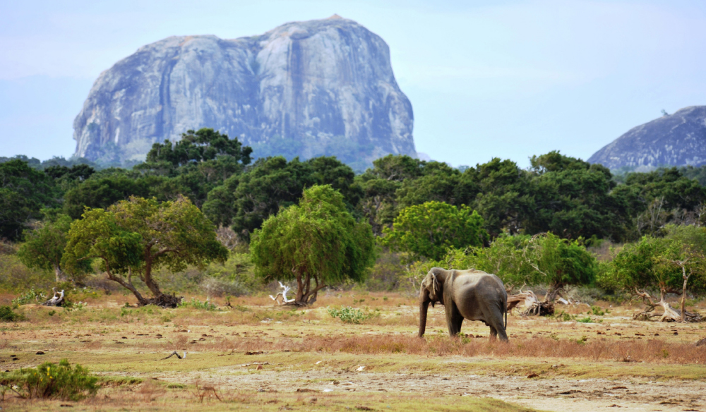
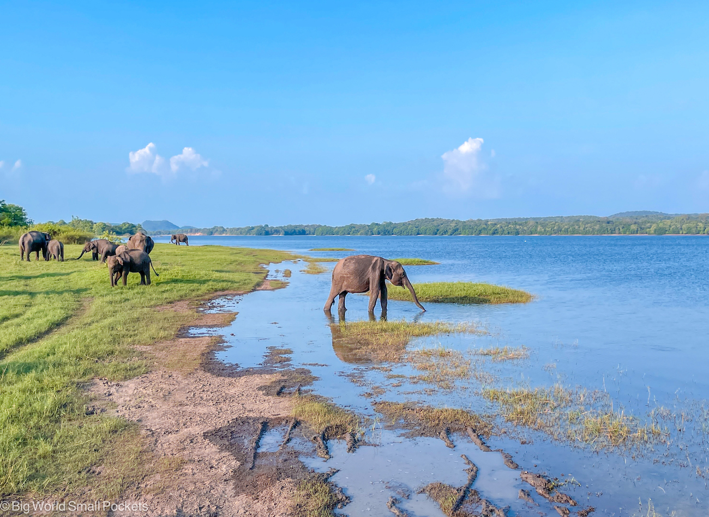

Discover Sri Lanka's wild side on a thrilling jeep safari. From majestic elephants to elusive leopards, embark on an adventure into the heart of nature. Every moment promises excitement and awe as you roam through rugged terrain and lush jungles. In Sri Lanka, jeep safaris are unforgettable journeys into the wild.
Best Places for Safaries!
Yala National Park in Sri Lanka
Yala is the most popular national park in Sri Lanka, and for good reason! It is famous for its high leopard population (40-50 within Yala), which is actually the highest leopard density in the world! Despite this, it’s not guaranteed to see a leopard, as they are very elusive. However, your chances of a leopard sighting are much higher at Yala than in any of the other parks in Sri Lanka.

Udawalawe
Udawalawe is Yala’s slightly lesser-known neighbor. Although it is less popular, it is still an amazing place to see animals because of its small size and open views. It is particularly good for seeing elephants as there are approximately 400-500 in the park, which is an incredibly high density in such a small area! It is also excellent for birdwatching too; thought to be one of the best birdwatching sites in the whole country!

Minerriya
Minnerriya is most famous for the spectacular ‘elephant gathering’. During September/October, the lake dries out, and the elephants gather together around the lake and feed on the grassland. Seeing hundreds of elephants all congregated together in one area is one of the most breathtaking experiences. The lake also attracts an amazing array of birdlife, so it’s excellent for bird lovers too.

JUST KEEP IN MIND!
Prioritise your safety above all else, and research the reputation of the rafting tour operators before selecting one. It is recommended that you do not embark on the more dangerous waters before you’ve accumulated prior experience navigating canyons and rafts. Make sure to wear comfortable clothing that is quickly drying when on your journey, and the equipment provided by the guides are a must.